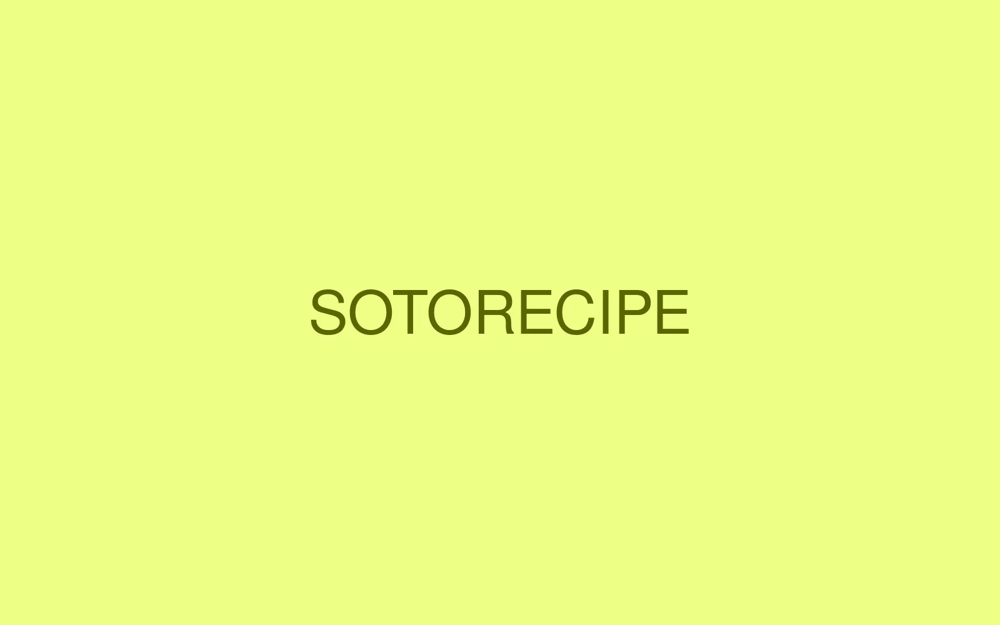

食・農 / 観光
ソトレシピ

PROJECT INFORMATION
公式サイトを見る ↗（新しいタブで開く）シーザスターズの旅するフードメディア「ソトレシピ」。企画・設計、デザイン、フロントエンドを担当しています。
01 / 背景とテーマ
輪郭を与える
2017年に「キャンプ飯レシピサイト」として始まったメディアです。外で料理をするという行為は、レシピそのものよりも段取りと道具に左右されます。だから人が探しているのは「何をつくるか」ではなく「メスティンで何ができるか」だったりする。ソトレシピは、その探し方の側に合わせてコンテンツを組み直し、いまは「旅するフードメディア」としてご当地グルメまでを含む食の入口になっています。
02 / SCHEMAの担当範囲
全体を整える
SCHEMAは設計・企画からデザイン、フロントエンドまでを担当。レシピは調理器具別に分類し、メスティン、スキレット、ダッチオーブンといった手元の道具から辿り着ける構造にしました。記事、動画、シェフ紹介、オンラインショップと、役割の違うコンテンツが並び続けるメディアです。増えても崩れない型をつくることを、見た目より先に置いています。
03 / 取り組みの視点
枠組みをひらく
レシピを読む場所から、出かける理由が見つかる場所へ。SNSの総フォロワーは約40万人にのぼります。画面の中で完結させず、外に出たあとの時間へつながるメディアとして組み立てた取り組みです。